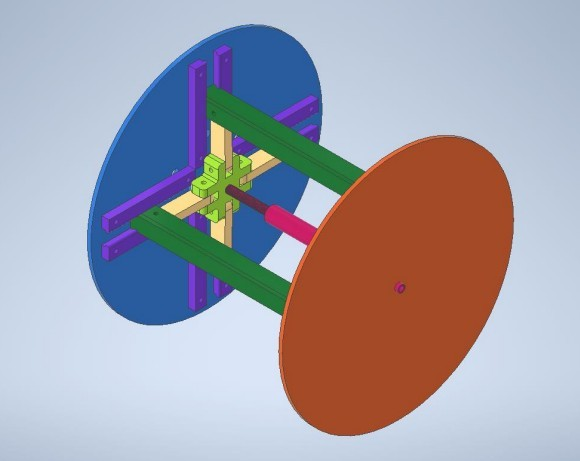
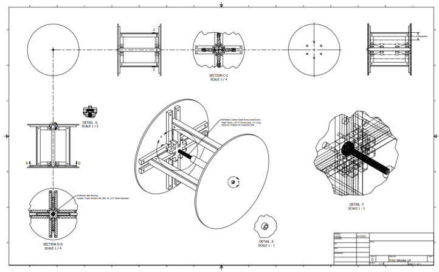

professional_projects
covestro_trim_winder_design
During my Covestro P&T internship, I spent time working on developing new trim winder conceptual designs. This improved my modeling abilities and experience with Autodesk Inventor Professional. Design constraints included tension forces exerted on the winder, quick operation speed, and the ability for the winder to collapse and have trimmed material removed. My designs focused on simplicity, reducing moving parts and having all failure modes point inward, away from the machine operator.

v1.1 Trim winder modification (Autodesk Inventor Professional)
v3 Trim winder concept animation (Autodesk Inventor Professional)

v4 Trim winder design (Autodesk Inventor Professional)

v4 Trim winder drawing (Autodesk Inventor Professional)